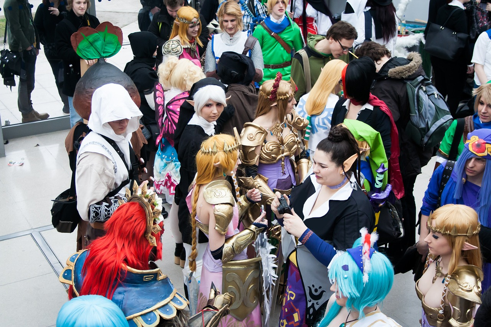

About CossiePlay
 Cosplay, a portmanteau of the words costume play, is a performance art in which participants called cosplayers wear costumes and fashion accessories to represent a specific character. Cosplayers often interact to create a subculture and a broader use of the term "cosplay" applies to any costumed role-playing in venues apart from the stage. Any entity that lends itself to dramatic interpretation may be taken up as a subject and it is not unusual to see genders switched. Favorite sources include manga and anime, comic books and cartoons, video games, and live-action films and television series.CossiePlay is a family-run business, operating in Hulkstown since 2012. We create outstanding custom-made costumes. Cosplayers can order any kind of costume - from simple Spiderman or elf costumes right up to costumes including advanced features like armour, animatronics, realistic weaponry and working force fields. Depending on the difficulty, costumes take between 1 and 50 weeks and cost between $10 and $10,000.
We buy and sell second-hand costumes (a price list is available) as well.
On the first Saturday of every month we hold a “CossiePlay Party” at the town hall. Entry is $15 for adults, $10 for ages 6-17 and kids under 6 are free. Each entry includes one non-alcoholic drink and a glow stick. Parties start at 6pm and run until 11pm. There is always a live DJ at the party (who takes requests) and dancing is common (but not required).
Cosplay, a portmanteau of the words costume play, is a performance art in which participants called cosplayers wear costumes and fashion accessories to represent a specific character. Cosplayers often interact to create a subculture and a broader use of the term "cosplay" applies to any costumed role-playing in venues apart from the stage. Any entity that lends itself to dramatic interpretation may be taken up as a subject and it is not unusual to see genders switched. Favorite sources include manga and anime, comic books and cartoons, video games, and live-action films and television series.CossiePlay is a family-run business, operating in Hulkstown since 2012. We create outstanding custom-made costumes. Cosplayers can order any kind of costume - from simple Spiderman or elf costumes right up to costumes including advanced features like armour, animatronics, realistic weaponry and working force fields. Depending on the difficulty, costumes take between 1 and 50 weeks and cost between $10 and $10,000.
We buy and sell second-hand costumes (a price list is available) as well.
On the first Saturday of every month we hold a “CossiePlay Party” at the town hall. Entry is $15 for adults, $10 for ages 6-17 and kids under 6 are free. Each entry includes one non-alcoholic drink and a glow stick. Parties start at 6pm and run until 11pm. There is always a live DJ at the party (who takes requests) and dancing is common (but not required).
Party Guidelines
CossiePlay party-goers party at their own risk and are responsible for their own safety. Check with your doctor before you party hard. Party fees must be paid at the door. Cash or EFTPOS accepted. Credit card payments attract a 2% surcharge. Alcohol is served at the bar to over 18s only. No intoxicated persons will be served, but will be escorted to a taxi – paid by the party-goer.